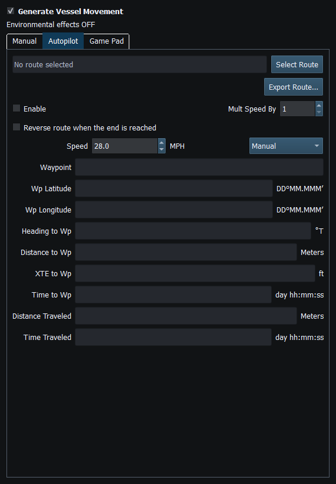
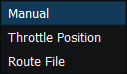

Autopilot follows a selected validated route using Vessel Movement. Selecting a file or chartplotter snapshot is preparation; it is never an automatic engage command.
Click the Autopilot Enable control only when the pending route and local operating state are correct. Read Waypoint, Wp Latitude/Longitude, Heading to Wp, Distance to Wp, XTE to Wp and Time to Wp together. Distance/time travelled are local progress indicators. A route-name field showing the KML's internal name, rather than its filename, is not by itself a load failure.
| Speed source | Use |
|---|---|
| Manual | Use the displayed selected speed |
| Throttle Position | Use configured propulsion/profile behavior and readiness |
| Route File | Use supported route speed/default behavior; ordinary GPX/KML does not guarantee per-waypoint speed metadata |
Mult Speed By (1–10) multiplies simulated travel speed, including speed over ground and closing velocity. Elapsed time remains in real seconds. It does not change network bitrate or instrument reporting intervals. Start with a modest multiplier to observe waypoint transitions.
OpenCPN can display the vessel position, course and speed generated while RayNmeaSimulator follows a route. Configure a compatible NMEA connection between the applications. If you already have a working connection, retain its settings.
Simulator route following does not engage an external autopilot or transfer a route to OpenCPN. Stop Sending/F12 ends external output; disable Autopilot separately to stop local route following.
Reverse route when the end is reached configures continued reverse traversal at the endpoint; it is not a request to reverse a physical engine or upload a reversed route. Test the route with the option off first, then enable reversal deliberately and observe the waypoint order/direction at the end. Do not infer chartplotter navigation engagement from local progress.
A new route selected during a run is pending for the next activation; the current route continues. Cancelled or invalid imports retain the previous selection. Disable Autopilot, review the new route and explicitly enable it to begin the next run.
Navigation instruments need compatible Vessel Movement bindings, generator Dispatch and their own Enable/reporting interval. APB and RMB fields can be edited manually, but automatic Vessel Movement bindings for them are not available.

Figure 42. Autopilot route selection, speed source and waypoint progress controls. Click to enlarge.

Figure 43. Autopilot speed may use Manual, Throttle Position or Route File where data are available. Click to enlarge.
Generating NMEA Data · Enable, Dispatch and Sending · Manual Vessel Movement · Game Controller Mode · Engine and Transmission Simulation · Weather and Environmental Simulation · AIS Simulation · Windlass Simulation · Connection Troubleshooting · Route Overview · Engineering Units